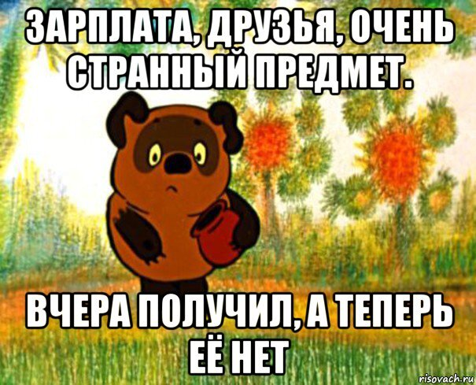
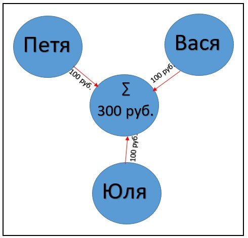
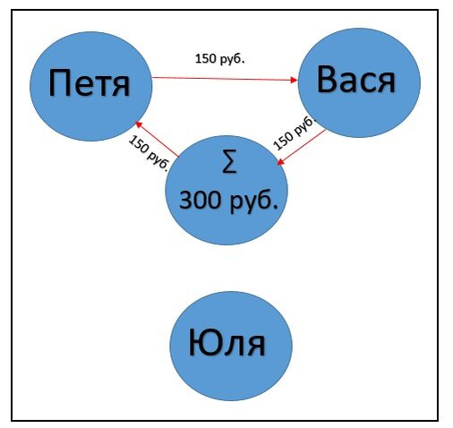
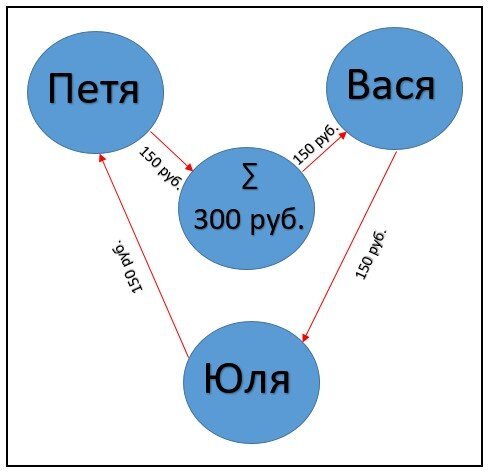

Регистрация в телеграм-боте
Вернуться в раздел "Статьи участников МММ"
Существует несколько способов размножения денег.
Например, деньги можно напечатать (не рекомендую использовать этот способ на практике - если вы, конечно, не глава Центробанка).
Но мы рассмотрим другой способ, который не столь очевиден и, что самое главное, доступен простым людям.
Речь пойдёт о так называемой "кассе взаимопомощи" или, как говорят некоторые, - "финансовой пирамиде" (я бы эти 2 понятия все-таки разделял, но об этом чуть ниже).
В головах очень многих людей деньги ассоциируются с чем-то конечным. И их можно понять: житейский опыт говорит о том, что не успел человек получить зарплату, как она быстро начинает заканчиваться. Поэтому деньги прочно воспринимаются как что-то, чего всегда не хватает.

Но на самом деле это не совсем верное восприятие сущности денег.
Почему?
Да потому что деньги, оказывается, умеют размножаться (если, конечно, с ними правильно обращаться).
И чтобы это наглядно доказать, давайте проведём небольшой мысленный эксперимент (можно, кстати, не только мысленный - все описанное ниже вы можете проделать на практике, сидя за столом в кругу знакомых и предложив им скинуться по 100 руб., с тем чтобы превратить эту сотку, скажем, в 500 руб. прямо на их глазах. Уверен, по окончании эксперимента они будут пребывать в лёгком шоке от увиденного).
Представьте, что 3 человека (назовём их Петя, Вася и Юля) решили запустить свою собственную кассу взаимопомощи.
Условия в этой кассе следующие:
- Средства из кассы участники могут брать только соблюдая определенную очередность (т.е. одновременно все участники кассы забрать деньги не могут)
- После того, как участник взял в кассе деньги, он обязан совершить покупку на эту сумму у любого другого участника кассы (т.е. берём только тогда, когда действительно нужно что-то купить)
- Участник кассы, который получает оплату за свой товар или услугу, должен либо тут же совершить покупку у другого участника кассы, либо, если необходимости в такой покупке пока нет, внести деньги обратно в кассу (деньги дома про запас не маринуем - они должны работать в Системе, это выгодно всем).
Для того, чтобы наполнить кассу, наши участники скинулись по 100 руб. каждый. Таким образом, в кассе оказалось 300 руб.

Пока всё просто и очевидно.
А вот дальше начинается "магия".
Допустим участник Петя решил купить у участника Васи свежую рыбу, которую тот поймал в озере. Стоимость рыбы 150 руб.
Для этой цели Петя берет из кассы 150 руб. и передаёт их Васе, получая взамен рыбу. Вася, согласно правилам Системы, вносит эти деньги обратно в кассу (будем для простоты считать, что Система каждый раз "берёт в долг" эти деньги).

Через некоторое время уже у Васи возникает потребность купить домашние помидоры, которые выращивает Юля.
Для этой цели участник Вася берёт в кассе 150 руб. и передаёт их участнице Юле, получая взамен вкусные помидоры.
Юля, получив 150 руб., решает не вносить деньги в кассу, а сразу их потратить (женщина, что поделать!;) и купить себе красивое ожерелье из ракушек, которые изготавливает Петя.
Для этой цели участница Юля передаёт участнику Пете 150 руб., которые тот, согласно правилам, вносит обратно в кассу.

Каждый из участников этой Системы по итогу купил товаров или услуг на сумму 150 руб., вложив при этом в Систему всего 100 руб.!
При желании этот цикл можно повторить еще раз.
И тогда каждый участник кассы купит товаров или услуг уже на 300 руб. при тех же вложенных фактически 100 рублях.
Т.е. каждый участник данной Системы за 2 цикла уже утроил свои вложенные деньги, и суммарный оборот этой Системы (можно его назвать экономическим термином ВВП) составил 900 руб.
И это притом, что в кассе никогда не было больше чем 300 рублей.
При желании этот цикл можно повторять многократно. Насколько при этом размножатся вложенные в Систему деньги, можете посчитать сами.
А после того, как посчитаете, ответьте себе на вопрос: когда закончатся деньги в данной Системе?
Выводы, которые можно сделать из вышеприведённой схемы (а эти выводы будут справедливы как для системы, состоящей из 3-х человек, так и для системы, состоящей из 3-х миллионов человек):
1) Деньги в закольцованной Системе не являются чем-то конечным. Поэтому при соблюдении определённых условий кончиться они никак не могут. И каждый участник кассы может забрать из Системы средств больше, чем вложил.
2) Касса взаимопомощи может работать очень долго - схема работоспособна до тех пор, пока участники кассы будут соблюдать правила созданной ими Системы. И всё это время участники смогут раз за разом брать средства из кассы - т.е. проблемы "заканчивания" денег не существует.
3) Приток новых участников для такой кассы взаимопомощи (в отличие от мошеннических финансовых пирамид) не является чем-то строго обязательным - она вполне может работать и автономно. Другое дело, что такой приток желателен и будет способствовать росту масштаба и стабильности работы Системы - но это тему мы рассмотрим в отдельной статье.
4) Касса взаимопомощи легко переносит одновременный вывод средств в размере 1\2 от её баланса (в нашем примере это 150 руб). В принципе, даже одновременный вывод участниками ВСЕХ имеющихся на балансе кассы средств не является для неё фатальным.
5) Учитывая, что касса взаимопомощи может генерировать деньги неограниченно долго, то сумма "долга" перед участниками, которую Система будет накапливать в процессе работы, абсолютно не критична.
Критично лишь поведение участников этой Системы: если все участники решат одновременно снять все средства, их просто не хватит.
Внимательный читатель может заметить: помимо денег, каждый участник вкладывает в Систему еще и свой труд, производя те или иные товары и услуги, которые потом покупают другие участники. И что купить можно только очень ограниченное число таких товаров и услуг, т.к. круг участников, их производящих, состоит всего лишь из 3-х человек.
Всё это правда.
Но это только часть правды. Главная правда впереди.
Продолжение следует...
Часть 2
P.S. В принципе, тот же самый механизм создания новых денег используют все современные банки, а также мошенники в различных финансовых "проектах". Только там этот механизм работает с целью обмана участников и обогащения основателя пирамиды.
На примере нашей схемы это равносильно тому, как если бы все участники переводили свои средства на счёт одного человека, а потом этот человек исчез бы со всеми деньгами.
Поэтому я разделяю термины "финансовая пирамида" (по крайней мере, в том смысле, в котором его воспринимает большинство обывателей) и "касса взаимопомощи" - т.к. несмотря на схожие принципы работы, цели у мошеннической пирамиды и кассы взаимопомощи диаметрально противоположны.
Продолжение ЗДЕСЬ
Вернуться в раздел "Статьи участников МММ"
Регистрация в телеграм-боте